CS 180 · Project 2 · Fall 2026
Fun with Filters
and Frequencies
Part 1.1: Convolutions from Scratch
I implemented convolution with four loops over the image and filter, then with two loops over the image and a NumPy sum for each patch. Both versions flip the filter and return an image with the same dimensions as the input.
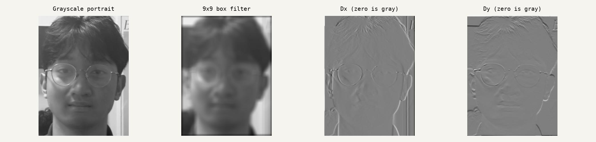
The box filter is np.ones((9, 9)) / 81. The difference filters are Dx = [[1, -1]] and Dy = [[1], [-1]]. I use zero padding here: 4 pixels on each side for the box filter, and one leading zero for the two-element filters. This matches SciPy's mode='same', boundary='fill', including even-sized kernels.
| Filter | Four loops | Two loops | SciPy | Max. error |
|---|---|---|---|---|
| 9x9 box | 785.40 ms | 65.77 ms | 2.77 ms | 1.89e-15 |
| Dx | 28.50 ms | 77.18 ms | 0.27 ms | 0.00e+00 |
| Dy | 33.85 ms | 70.60 ms | 0.35 ms | 0.00e+00 |
These are median times from three runs per method on the same 180 x 240 image. The two-loop version is faster for the 9 x 9 filter. For the tiny difference filters, calling NumPy for each patch costs more than the small inner loops, so it is slower. SciPy is fastest in all three comparisons. Zero padding also darkens the box-filtered image near its border because some of the averaged values are zero.
Part 1.1: Convolution code
The implementations below use NumPy only. The padding places one extra pixel before the image for an even-sized filter, which keeps the output aligned with SciPy.
def convolve_four(im, kernel):
h, w = im.shape
kh, kw = kernel.shape
padded = np.pad(im, ((kh//2, (kh-1)//2), (kw//2, (kw-1)//2)))
flipped = kernel[::-1, ::-1]
result = np.zeros((h, w), dtype=float)
for y in range(h):
for x in range(w):
for i in range(kh):
for j in range(kw):
result[y, x] += padded[y+i, x+j] * flipped[i, j]
return resultdef convolve_two(im, kernel):
h, w = im.shape
kh, kw = kernel.shape
padded = np.pad(im, ((kh//2, (kh-1)//2), (kw//2, (kw-1)//2)))
flipped = kernel[::-1, ::-1]
result = np.zeros((h, w), dtype=float)
for y in range(h):
for x in range(w):
result[y, x] = np.sum(padded[y:y+kh, x:x+kw] * flipped)
return resultbox = np.ones((9, 9)) / 81
dx = np.array([[1., -1.]])
dy = dx.T
result = convolve_two(portrait, box)
reference = convolve2d(portrait, box, mode='same', boundary='fill')Part 1.2: Finite Difference Operator
I convolve the cameraman image with Dx and Dy, then compute the gradient magnitude as sqrt(gx**2 + gy**2). Dx responds to intensity changes across columns; Dy responds to changes across rows. I use symmetric boundary padding in this section so the outside of the image does not create an artificial edge.
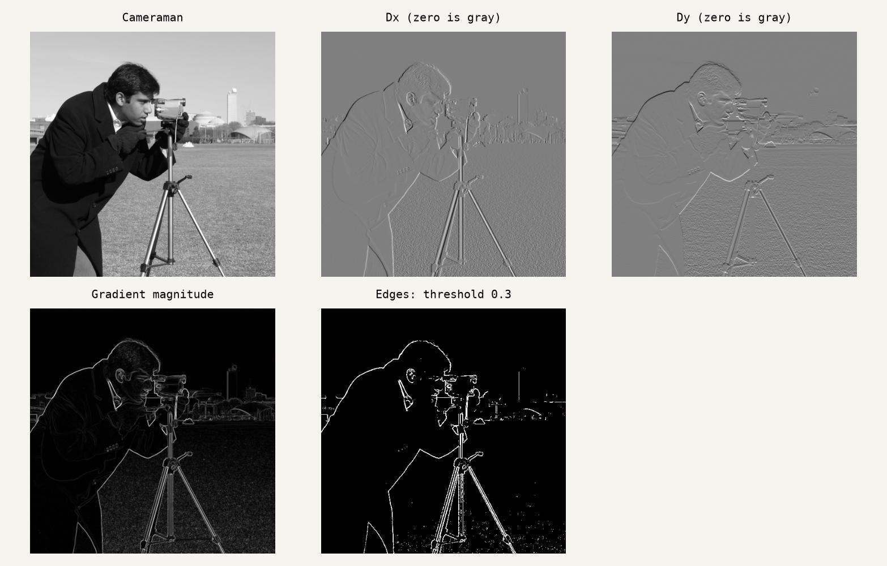
I chose a threshold of 0.20 for intensities between 0 and 1. At 0.10, much more grass texture survives. At 0.30, some weaker camera and tripod edges disappear. The 0.20 result keeps the main silhouette and tripod, although there are still small responses in the grass. I think this is a reasonable tradeoff before adding smoothing.
Part 1.3: Derivative of Gaussian (DoG) Filter
I use cv.getGaussianKernel(13, 2) and its outer product to make a normalized 13 x 13 Gaussian. Convolving this kernel with Dx and Dy in full mode gives the two DoG filters. Their positive and negative lobes take a difference while also smoothing nearby pixels.
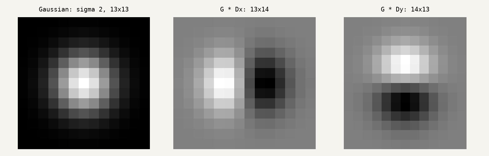
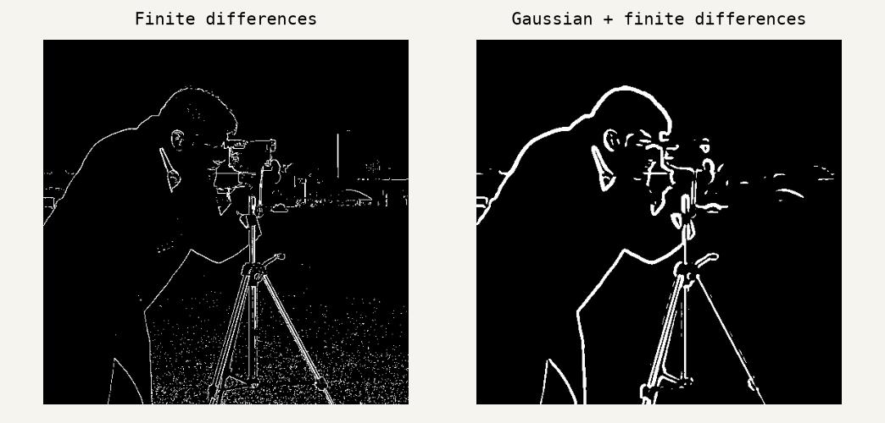
Smoothing removes much of the grass texture and gives cleaner, thicker edges around the head and tripod. Some small background details also disappear. The derivative values become smaller after smoothing, so I lowered the threshold to 0.055 instead of keeping 0.20.
Part 1.3: Comparing the two methods
The first method blurs the image and then applies each difference filter. The second applies each DoG filter directly to the image. By associativity, (I * G) * Dx = I * (G * Dx), and the same holds for Dy.
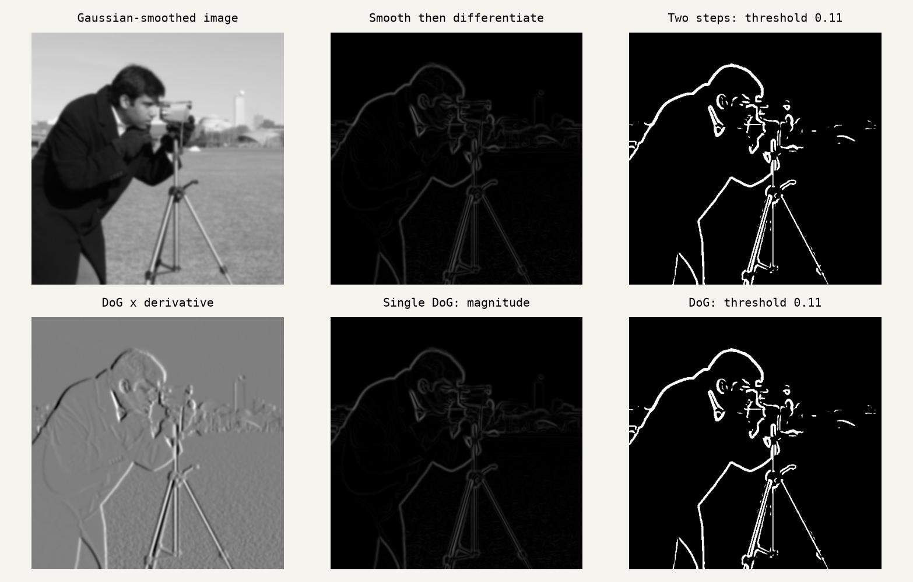
The largest absolute difference is 9.73e-16 for x and 1.03e-15 for y. I symmetrically extend the image by 13 pixels once, run both methods on that extension, and crop only at the end. Keeping that extra border avoids losing samples between the two convolutions. The remaining difference is floating-point rounding.
Part 2.1: Image "Sharpening"
A Gaussian blur keeps low frequencies. Subtracting it from the original gives the high-frequency component, and adding a scaled copy of that component increases contrast around details:
Isharp = I + alpha (I - G * I)
= [(1 + alpha) delta - alpha G] * I
I build the single kernel (1 + alpha) delta - alpha G and convolve once. Delta is zero except for a 1 at the center. All examples here use sigma 2 and a 13 x 13 Gaussian. RGB channels are filtered independently, and values are clipped only when displayed or saved.
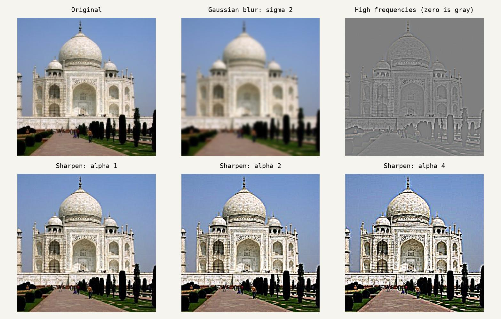
The window and dome details become more visible as alpha increases. At alpha 4, the image has stronger bright and dark outlines and starts to look harsh. I prefer alpha 1 or 2 for this image.
Part 2.1: Additional image and evaluation
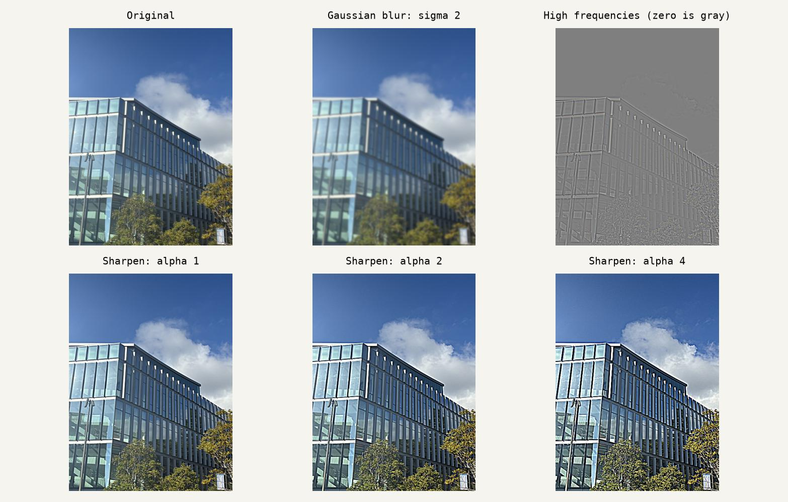
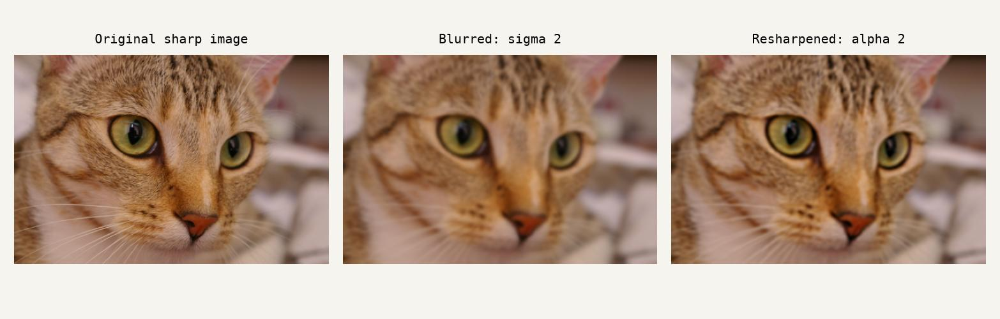
Resharpening makes the eyes and whiskers clearer than in the blurred version, but it does not restore all the fine fur detail. The mean squared error relative to the original drops from 0.001027 after blur to 0.000688 after sharpening. It is still above zero. Sharpening boosts the frequencies that remain; it does not undo the blur exactly.
The single-filter result also matches I + 2*(I - blur(I)) to within 3.82e-14 before clipping.
Part 2.2: Hybrid Images
For each pair, I keep low frequencies from one image and high frequencies from the other, then add them. Close up, the high-frequency details are easier to see. From farther away, the low-frequency shape becomes more visible. I use grayscale for all three hybrids.
For alignment, I select the two eye centers and map them to (170, 185) and (310, 185) on a 480 x 480 canvas. The transform adjusts scale, rotation, and position. I then crop both images to their shared valid area. The saved points and crop coordinates in the script make the results repeatable.
Cat and tiger
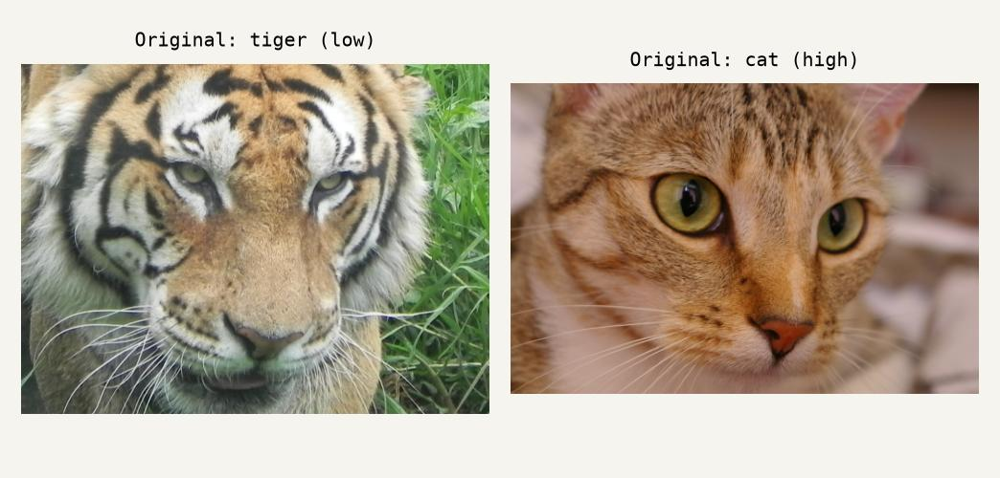
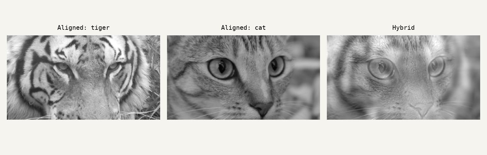
Part 2.2: Filters and cutoff choice
H = Glow * Ilow + w (Ihigh - Ghigh * Ihigh)
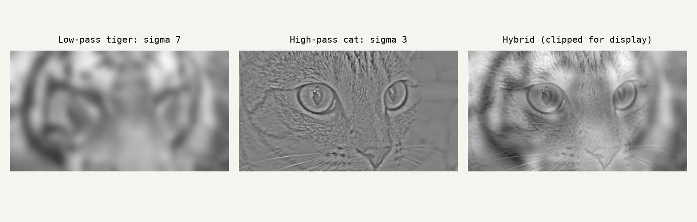
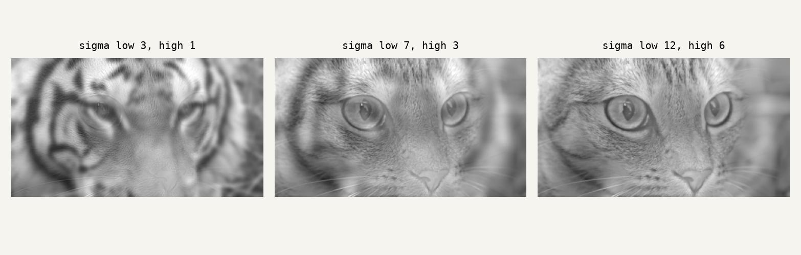
With sigmas 3 and 1, the tiger's details remain strong and the cat contributes mostly very fine edges. With 12 and 6, the larger cat features become more prominent and both faces look more mixed. I chose 7 and 3 because the cat's eyes and fur are visible nearby while the tiger's stripes remain visible at a smaller size.
| Hybrid | Low image / sigma | High image / sigma | High weight |
|---|---|---|---|
| derek + nutmeg | derek / 7 | nutmeg / 3 | 1.0 |
| portrait + astronaut | astronaut / 7 | portrait / 2.5 | 1.15 |
| cat + tiger | tiger / 7 | cat / 3 | 1.0 |
The sigmas are in pixels of the aligned image. A Gaussian has a smooth rolloff, so there is no hard cutoff. For reference, the low-pass -3 dB frequency is approximately sqrt(log(2)) / (2*pi*sigma): 0.0189 cycles/pixel for sigma 7 and 0.0442 for sigma 3. The high-pass filter is the complement of the sigma 3 low-pass filter.
Part 2.2: Fourier analysis
I compute log(1 + abs(fftshift(fft2(image)))) for both aligned inputs, the two filtered components, and the hybrid before display clipping. Adding 1 avoids taking log of zero. All five spectra use the same brightness scale.
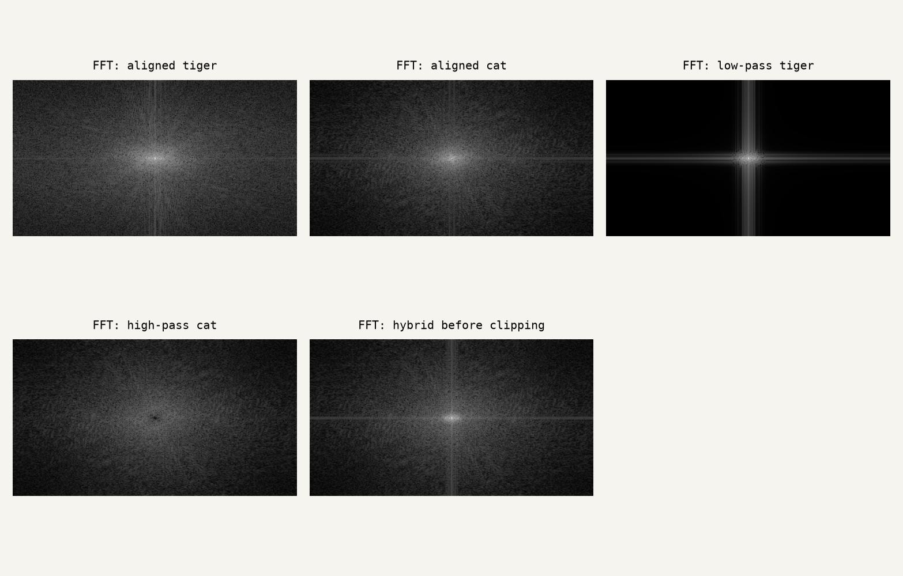
The low-pass spectrum loses much of the outer-frequency content. The high-pass spectrum has a darker center because the smooth component has been removed. The hybrid contains the low-frequency center from the tiger and more of the cat's fine detail outside it. The bright horizontal and vertical lines may partly come from discontinuities at the crop boundary, since the FFT treats the image as periodic.
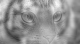
The same hybrid reduced to 80 pixels on its longer side. This approximates looking from farther away; the full-size image above is the near view.
Part 2.2: Derek and Nutmeg
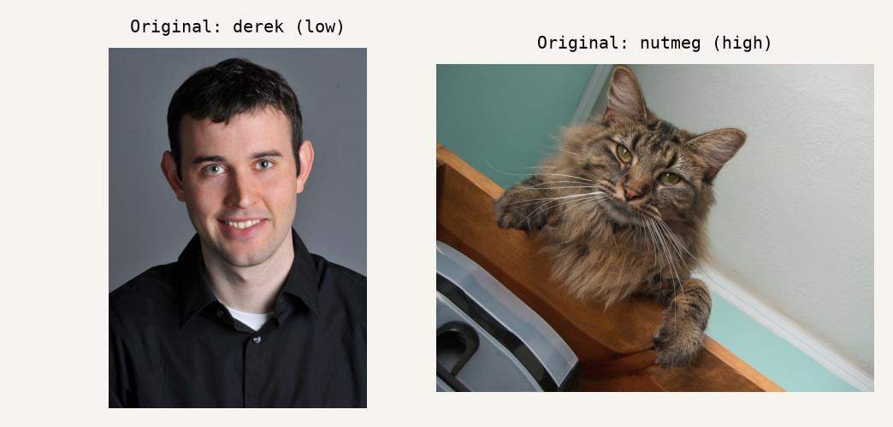
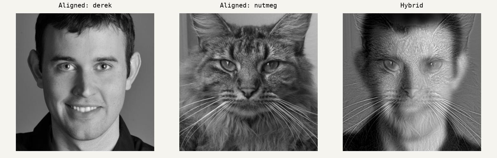
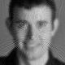
The same hybrid reduced to 80 pixels on its longer side. This approximates looking from farther away; the full-size image above is the near view.
Nutmeg's eyes, fur, and whiskers are visible close up. At a smaller size, Derek's face becomes easier to see. The eye alignment helps, although the cat's mouth and Derek's mouth are at different heights.
Part 2.2: My portrait and an astronaut
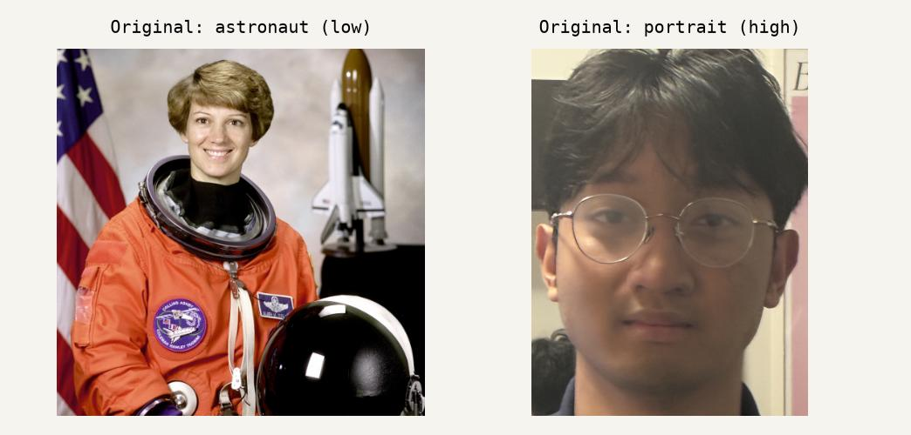
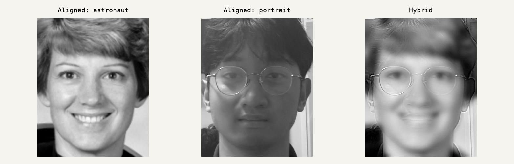
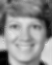
The same hybrid reduced to 80 pixels on its longer side. This approximates looking from farther away; the full-size image above is the near view.
My glasses and hair add detail at the larger size. When the image is small, the astronaut's smile and face shape are more apparent. This example is less convincing than Derek and Nutmeg: I think the different mouth positions and the softness of my original photo make it harder for the high-frequency face to dominate.
Part 2.3: Gaussian and Laplacian Stacks
I keep every level at the original image size. G0 is the input. The target Gaussian sigmas are 1, 2, 4, 8, 16, and 32 pixels. At each step, I blur the previous level with sqrt(sigma_next**2 - sigma_previous**2), since Gaussian variances add. The finite kernels make these effective sigmas approximate.
The Laplacian levels are Li = Gi - G(i+1). The final level is the coarsest Gaussian, G6. Adding all seven Laplacian levels reconstructs the image. No downsampling or built-in pyramid functions are used.
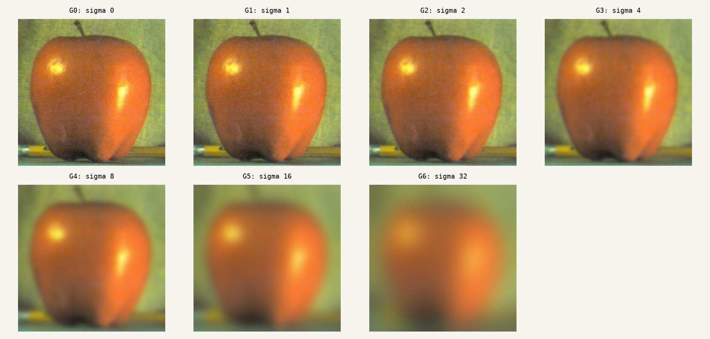
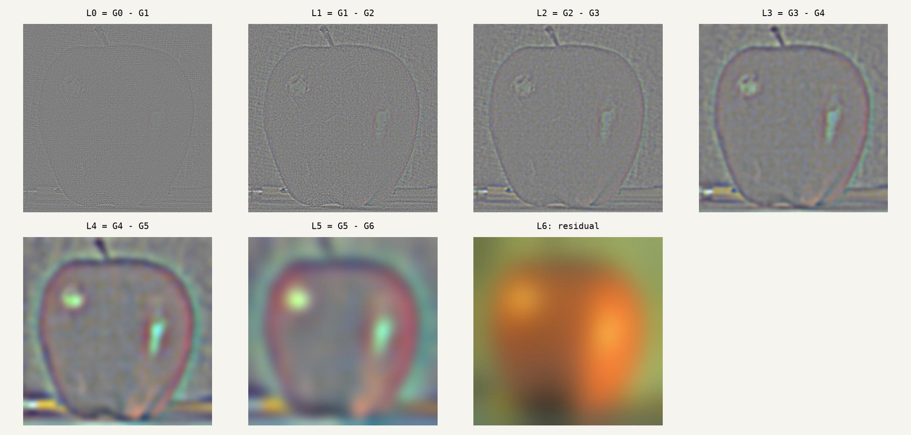
Part 2.3: Orange stacks
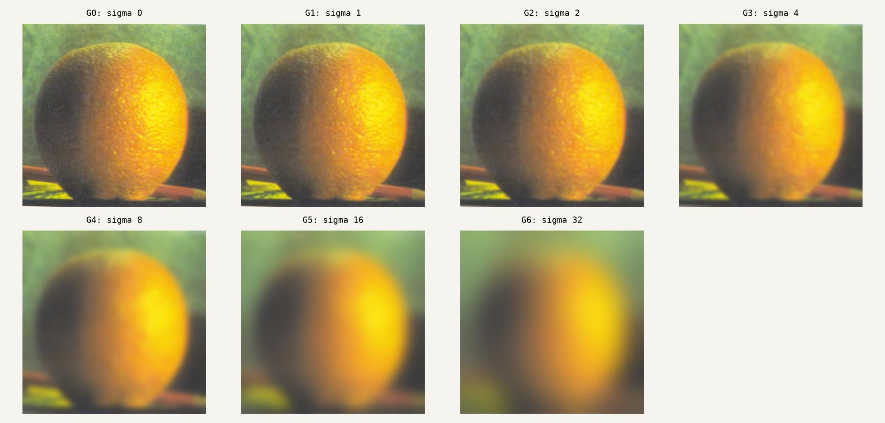
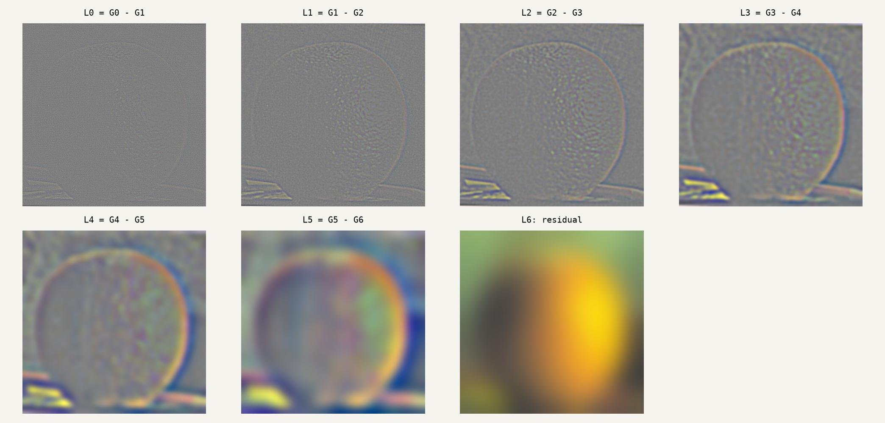
For both fruit images, the maximum reconstruction error before clipping is 2.22e-16. The residual is necessary: without it, the bands contain detail but are missing the broad color and brightness of the original.
Part 2.4: Multiresolution Blending
I build Laplacian stacks for A and B and a Gaussian stack for the mask M. White selects A and black selects B. At each level, I multiply the two image bands by complementary mask weights and add them. The final result is the sum over all levels, including the residual:
Lblend,i = Gmask,i LA,i + (1 - Gmask,i) LB,i
Iblend = sumi Lblend,i
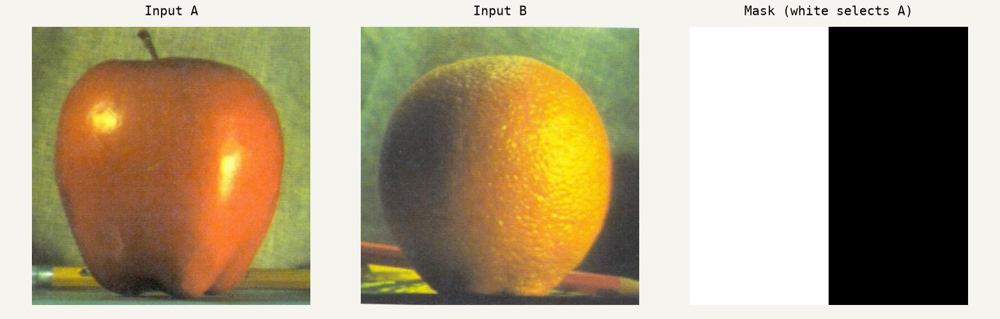
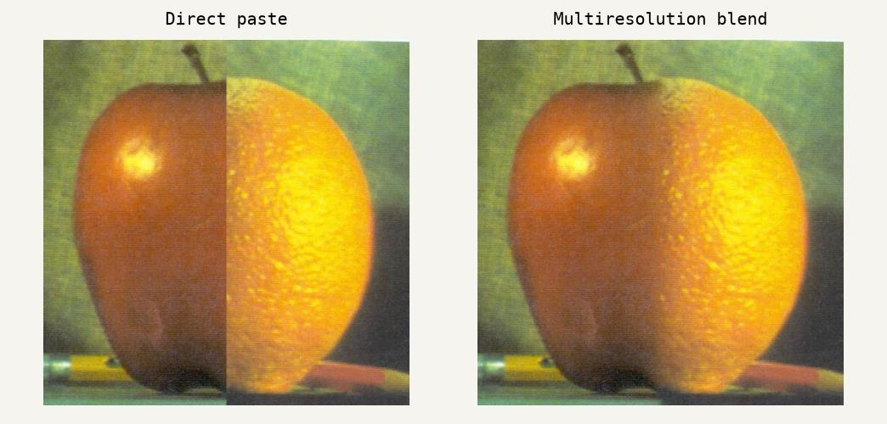
The fruit shapes do not match perfectly at the top, so a small shape change remains there. The obvious vertical color boundary in the direct paste is much less visible in the multiresolution result.
Part 2.3 + 2.4: Oraple stack visualization
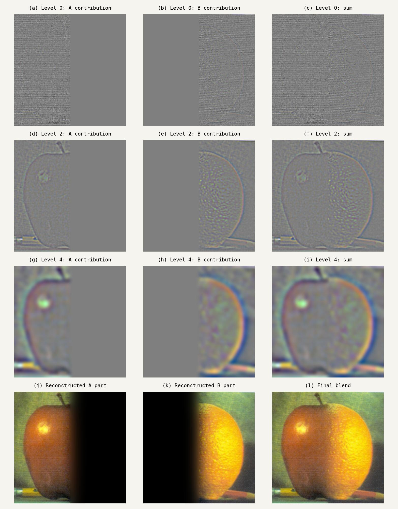
The signed bands share one display scale within each row. This contrast adjustment is only for visualization; the actual blend uses the original signed values.
Part 2.4: Custom blend 1
I use an elliptical mask to place my face inside the aligned astronaut portrait. The mask is centered at (240, 258) on the alignment canvas, with horizontal and vertical radii of 137 and 175 pixels, then cropped with the inputs.
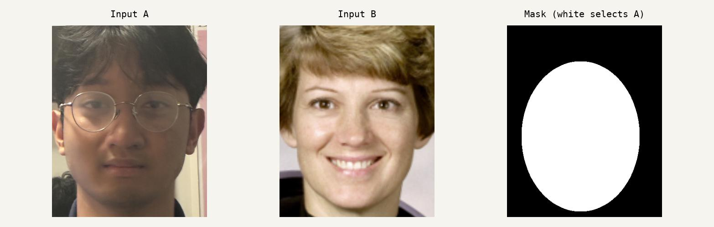
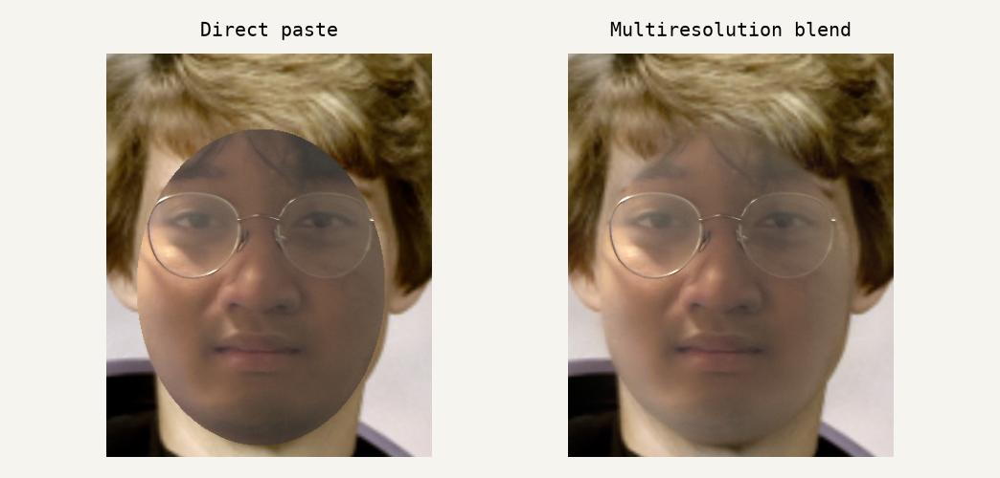
The direct paste has a clear oval boundary. The multiresolution blend softens that boundary, especially around the cheeks and forehead. The skin tones and lighting still differ, so the result does not look like an unedited photograph. I think a closer match in lighting would help.
Part 2.4: Custom blend process
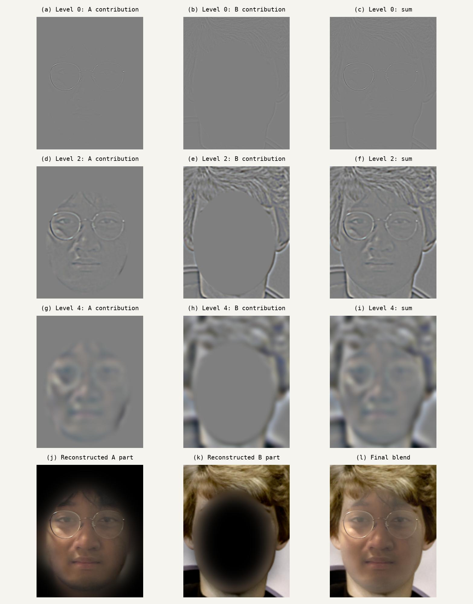
Part 2.4: Custom blend 2
For this example, I place tiger features inside the cat image using an eight-vertex polygon around the eyes and muzzle. This is a second irregular mask. I use the same aligned inputs as the hybrid, but combine spatial regions through the stacks instead of separating the two images into high and low frequencies.
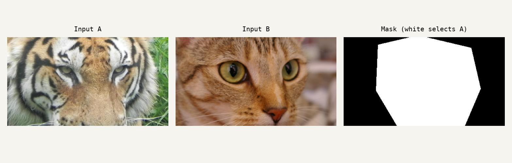
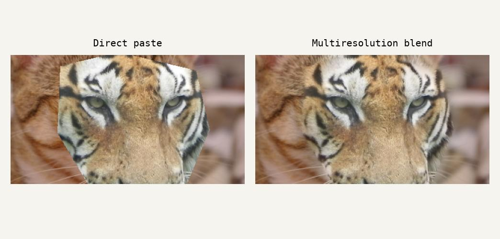
The polygon outline is much less obvious after blending. The tiger's striped forehead and smaller eyes remain, surrounded by the cat's fur. The face shapes still differ, so this looks like a combination of the two animals rather than a natural cat.
What I learned
The most useful thing I learned was that the same image can be split into frequency bands and used in different ways. Sharpening increases high-frequency contrast, hybrid images combine frequencies from different inputs, and multiresolution blending uses a different seam width at each scale.
I also found that boundary handling matters. The convolution implementations need the correct padding and filter flip to match SciPy. For DoG, keeping the padded border until the end makes the one-step and two-step methods agree. Alignment matters too: filtering cannot make two different face shapes line up everywhere.
Tiger photo: Amandaines, CC BY-SA 3.0. Cropped, aligned, filtered, and blended; tiger-based results use the same license.